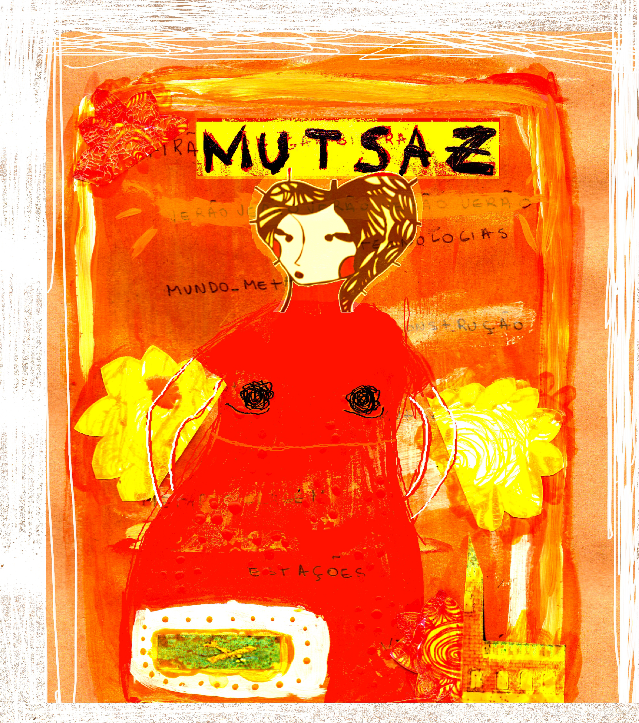

Organizando aqui as páginas da edição do MutSaz Verão 2010.
por Maira Begalli
Dezembro, mês que encerra o ano e que inicia o verão. Época de tempo novo e tempo velho, de ciclos e reciclagens.
Citando promessas para o futuro e ações propositivas metarecicleiras [1] de ano novo, vale linkar o debate sobre Lixo Eletrônico realizado na Matilha Cultural [2] e a atuação do Grupo de Trabalho sobre a Gestão de Resíduos Tecnológicos durante o IV Congresso da CiberSociedade[3], que suscitou discussões sobre a tecnologia, seus impactos socioambientais e ilusões fetichizadas[4].
Falando sobre mídias livres (...) aconteceu entre os dias 4 e 6 de dezembro, em Vitória, o II Fórum Nacional de Mídia Livre. MetaReciclagem foi convidada como Ponto de Mídia Livre premiada no edital nacional. Entretanto, as passagens chegaram tardiamente, assim como para as redes parceiras Des).(centro e Estúdio Livre. Consequentemente não pudemos participar da construção das propostas que embasariam a Confecom.
Entre meios e mensagens, hardwares e softwares, surge a frequente pergunta: A rede é livre?
Nesses fluxos de fim, recomeço e incertezas, abrimos a chamada para colaborações do #mutsaz entre 15 e 18 de dezembro. Nos links acima, encontram-se algumas sugestões de temas e reflexões que estiveram presentes na Rede nos últimos dias.
[1] http://www.macondocircus.comItags/metarecialagem-digital/ [1]
[2] http://lixoeletronico.org/blog/debate-do-lixo-eletronico-no-matilha-part... [2]
[4] http://noticias.uol.com.br/midiaglobal/dersplegel/2009/12/05/u1t2682u141... [4]
[5] http://www.forumdemidialivre.org [5]
[6] http://www.confecom.com.br/ [6]
[7] http://lidgnow.uol.com.brItelecom/2009/12/02/rio-de-janeiro-inaugura-pro... [7]
listagem disponivel em: http://rede.metareciclagem.org/wiki/MutiraoDezembroPosts [8]
Links:
[1] http://www.macondocircus.comItags/metarecialagem-digital/
[2] http://lixoeletronico.org/blog/debate-do-lixo-eletronico-no-matilha-participe
[3] http://www.lixoeletronico.org/blog/gt-no-congresso-gestao-de-residuos-eletro-eletronicos-e-processo-complexo-que-envolve-diferente
[4] http://noticias.uol.com.br/midiaglobal/dersplegel/2009/12/05/u1t2682u1416.htm
[5] http://www.forumdemidialivre.org
[6] http://www.confecom.com.br/
[7] http://lidgnow.uol.com.brItelecom/2009/12/02/rio-de-janeiro-inaugura-projeto-para-levar-web-de-graca-a-1-7-milhao/
[8] http://rede.metareciclagem.org/wiki/MutiraoDezembroPosts